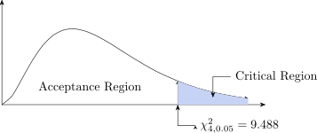
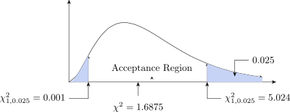

3.4 Test of Independence and Goodness of Fit Test
The \(\chi ^2\) test is used to determine whether there is a significant difference between the observed and
expected frequencies in one or more categories.
Do the number of individuals or objects that fall in each category differ significantly from the number
you would expect? Is the difference merely sampling error, or is it real? That is what the test
decides.
\(\chi ^2\) Test
- 1.
- Categorical data (counts in categories)
- 2.
- One or more categories
- 3.
- Independent observations
- 4.
- Enough sample size (at least 10)
- 5.
- Simple random sampling
- 6.
- Data frequencies
\[\text {Test statistic}\quad \chi ^2=\sum \frac {(O-E)^2}{E}\] Where:
\(O-\) the observed frequency in a category
\(E-\) the expected frequency in that category, if \(H_0\) were true
\(\chi ^2-\) the test statistic.
The differences are squared, so that shortfalls and excesses both count against \(H_0\) rather than cancelling, and each is divided by \(E\) so that a discrepancy is judged against the size of the category it occurs in – being 10 out on an expected 20 matters far more than being 10 out on an expected 2000.
Degrees of freedom. These are not \(n-1\), where \(n\) is the sample size. They count the categories, not the observations:
- Goodness of fit: \(\text {df} = k-1-m\), where \(k\) is the number of categories and \(m\) the number of parameters estimated from the data. The \(-1\) appears because the expected frequencies are constrained to the same total as the observed ones, so once \(k-1\) of them are fixed the last is determined.
- Test of independence: \(\text {df} = (r-1)(c-1)\) for an \(r\times c\) contingency table, since the row and column totals are fixed.
The statistic only approximately follows the \(\chi ^2\) distribution, and the approximation is adequate
when:
The conditions for these are:
- 1.
- The total frequencies is not less than 50.
- 2.
- The expected class frequencies are not less than 5.
If the second condition is not met it can be improved where \(v=1\) by making an adjustment known as
YATES correction which involves reducing value of \(|O-e|\) by 1/2.
Example 3.10. Four coins were tossed together \(160\) times, with the numbers of heads given below. Is this consistent with the coins being fair?
| number of heads | 0 | 1 | 2 | 3 | 4 |
| \(O\) | 15 | 46 | 54 | 35 | 10 |
Solution.
- 1.
- Set up the hypothesis
\(H_0\): the number of heads follows \(B(4, \frac 12)\) (fair coins) vs \(H_1\): it does not. - 2.
- Set \(\alpha =0.05\)
- 3.
- Test statistic: \(\chi ^2=\frac {\sum (O-e)^2}{e}\)
No of Heads \(O\) \(e\) \((O-e)^2\) \(\frac {(O-e)^2}{e}\) 0 15 \(160\times P(0)=10\) 25 2.500 1 46 \(160\times P(1)=40\) 36 0.900 2 54 \(160\times P(2)=60\) 36 0.600 3 35 \(160\times P(3)=40\) 25 0.625 4 10 \(160\times P(4)=10\) 0 0.000 Total 160 160 4.625 \begin {align*} P(x) &=\binom {n}{x}P^x(1-P)^{n-x}\\[1ex] e(0)=160\times P(0) &=160\times \binom {4}{0} \left (\frac {1}{2}\right )^0\left (\frac {1}{2}\right )^4=160\times \frac {1}{16}=10 \end {align*}
Our statistic is \(\chi ^2=4.625\)
- 4.
- Critical Region

Figure 28: Goodness-of-fit test: the statistic against \(\chi ^2_{4,0.05}\). Interpretation: with \(5\) categories and no parameter estimated, there are \(5-1=4\) degrees of freedom, and \(\chi ^2_{0.05,\,4}=9.488\). Our statistic \(\chi ^2=4.625\) lies in the acceptance region, and the \(P\)-value is \(P(\chi ^2_4>4.625)=0.33\).
We fail to reject \(H_0\): the observed counts are consistent with a binomial distribution with \(n=4\) and \(P=\frac 12\), that is, with fair coins.
Example 3.11. On a national basis the success rate for people taking the driving test for the
first time is \(40\%\). A driving instructor’s records show that for the 50 pupils of his who took the test
for the first time last year 25 passed.
Does his success rate differ from the national success rate?
Solution.
- 1.
- Set up the hypothesis
\(H_0: P=0.40\)
\(H_1: P\neq 0.40\) - 2.
- Set up level of significance \(\alpha =0.05\)
- 3.
- Test statistic \(\chi ^2=\frac {\sum (O-e)^2}{e}\)
\(O\) \(e\) \(|O-e|\) \(|O-e|-\frac {1}{2}\) \(\frac {(|O-e|-1/2)^2}{e}\) Passed 25 20 5 4.5 1.0125 Failed 25 30 5 4.5 0.6750 Total 50 50 1.6875 - 4.
- Critical Region

Figure 29: Test of independence on a \(2\times 2\) table: \(\chi ^2=1.6875\) falls in the acceptance region. With \(2\) categories there is \(1\) degree of freedom, which is why Yates’ correction was applied; \(\chi ^2_{0.05,\,1}=3.841\). The statistic \(1.6875\) is well below it, and the \(P\)-value is \(P(\chi ^2_1>1.6875)=0.19\).
Since the \(P\)-value is greater than \(0.05\) we fail to reject \(H_0\): the instructor’s pass rate of \(50\%\) is not significantly different from the national \(40\%\) with only \(50\) pupils.
Questions on this section
Stuck on something here? Ask below and it stays attached to this topic.